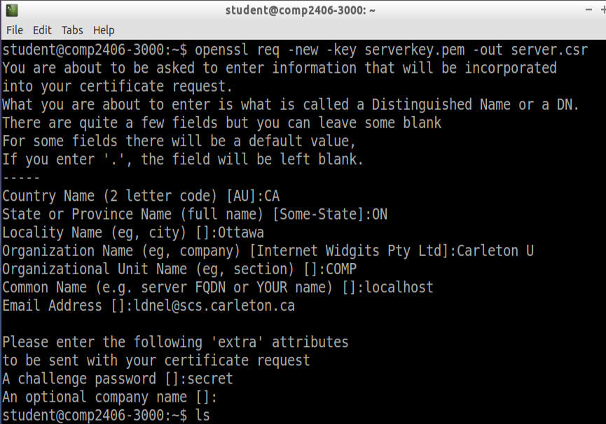
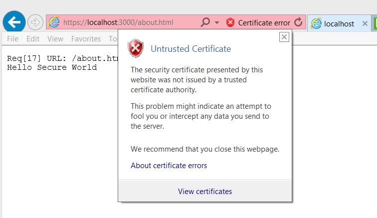

COMP 2406 - Fall 2014 Tutorial #4
HTTPS Secure Connection and Thermostat Mockup
© L.D. Nel 2014
Revisions
Description:
The purpose of this tutorial is to get you working with HTTPS to form a secure connection between your browser and server. To proceed with this tutorial you will need to get a SSL private key and certificate. I've described how to do it on our Linux virtual machine. You may want to investigate how to do it on Windows or Mac. (Once you've created the key and certificate you can use it in your OS of choice for doing the node.js server.)
We will also build a HTML mockup of the thermostat browser page you intend to build for assignment #2.
IMPORTANT: This tutorial is meant as a homework assignment and for you to demonstrate your results at your tutorial session. You will not be able to complete it if you only start when you come to the tutorial. You will need to read about and learn those aspects of javascript that pertain to this tutorial on your own and come up with a strategy to solve the problems.
To get credit for the tutorial you must complete, or make significant progress on, the exercise problems provided and demonstrate your results to the tutorial TA before you leave the tutorial.
Instructions:
Preliminary)
Run the following server from the demo code folder:
node http_server.js
and test it by opening a browser to:
http://localhost:3000/index.html
The demo code uses an HTTP server. We want to change that to use secure HTTPS instead which sends encrypted messages through the network. To do that you will need an SSL key and signed certificate.
Problem 1)
Generating your SSL key and certificate pair:
To participate in an HTTPS connection the parties involved both need to have an encryption key and certificate. The browser already has its own, but you will need them for your server. Keys and certificates can be generated using an OpenSSL library which is installed by default in linux. Here is the procedure to generate these two files on our linux virtual box image. Once you have generated your key/certificate pair you can move those files to the OS of your choice to build the server. OpenSSL is also available on Windows or Mac but you will have to look up how to install that capability if you want to generate your keys that way. There are also web sites that will allow you to generate free signed keys and of course ultimately you can buy a certificate from a respected certificate authority for a production server. (If you find a nice procedure to generate keys email me the instructions and I can post them for the other students.)
Instructions:
Start up the VirtualBox application and launch our COMP 2406-3000 appliance. Sign into the student account with password: tneduts!
Open a terminal window in which to execute the following commands.
1) Generate a public/private key for the server using the openssl command:
openssl genrsa -out serverkey.pem 2048
This will produce a file called serverkey.pem (in privacy enhanced mail format) which is an RSA private/public key using 2048 bits.
2) Generate a certificate request using the following command.
openssl req -new -key serverkey.pem -out server.csr
This command will ask you a bunch of questions and will produce a file server.csr which is your certrificate request file. Here is the output window showing me making up a certificate request.

3) It is recommended that you remove the passphrase from the key as follows:
mv serverkey.pem temp.pem
openssl rsa -in temp.pem -out serverkey.pm
This should resave your serverkey.pem with passphrase removed. (Note I skipped this step when making the demo code and it did not seem to make a difference. If you don't do this you might be asked for your secret passphrase when you go to make an HTTPS connection).
4) Sign the certificatea. That is, generate a self-signed certificate using your key and certificate request:
openssl x509 -req -days 365 -in server.csr -signkey serverkey.pem -out servercert.crt
This will produce a file: servercert.crt that is your self-signed certificate.
You will need your serverkey.pem and servercert.crt files to implement an HTTPS server. You can, of course, name the files whatever you want. The key file should be kept very private because it contains within it your private key. The certificate on the other hand is going to be sent to clients when an HTTPS connection is made.
Note: You can also accomplish all of the above using this one compound command:
openssl req -x509 -nodes -days 365 -newkey rsa:2048 -keyout serverkey.pem -out servercert.crt
The -nodes above has nothing to do with node.js. It means "no DES encription".
Your key file and self-signed certificate can now be used for your server that will use HTTPS. Move these files to the OS, or environment, where you want to build your node.js HTTPS server.
Finally while you are at it, create a second key/certificate pair called something like client-key that you can use later for implementing a secure client as opposed to a secure server. You can save these keys for later use. the -days 365 options above means your certificates will be good for one year.
Problem 2)
We want to modify the demo server to use HTTPS instead of HTTP. Here are the steps.
1) Your code needs to require('https') instead of 'http'. Change the statement
var http = require('http');
to the following instead:
var https = require('https');
2) Add the file sytem module 'fs' and the following code to create an "options" object containing the SSL key and certificate:
var fs = require('fs');
//Private SSL key and signed certificate
var options = {
key: fs.readFileSync('serverkey.pem'),
cert: fs.readFileSync('servercert.crt')
};
3) Modify the
http.createServer(function(req,res){...});
to the following instead:
https.createServer(options, function(req,res){...});
Also modify the server code to output 'Hello Secure World' instead of just 'Hello World'. You should now be able to launch your server and connect to it securely from a browser by visiting:
https://localhost:3000/whatever.html
Notice the browser will probably complain about the certificate not being secure. You will have to dismiss its complaints. It is unhappy because you self-signed your certificate instead of having a trusted certificate authority issue the certificate. Even after you connect there will likely be an indicator in the browser that the certificate is not trusted as shown below for Internet Explorer.

Problem 3)
The Heat Is On
Assignment #2 requires that you build an "internet of things" that includes, among others, a browser page with which to control a furnace themostat. For this problem build a mockup HTML page for controlling the thermostat. That is, visualize what the page should look like including buttons, textfields, labels and other controls or displays you want. Then do some research on how to create these in HTML and provide an HTML page. Additionally you can do some research on how to position and format the elements using CSS if you want.
You will be asked to open the page just locally with a Browser. It does not need to be served by a server for this question. We just want to see an HTML mockup of the page you plan to use to control your thermostat and which will display temperature and weather information consistent with the requirements of assignment #2.
When you have completed these problems demonstrate your code to a TA's to get credit for the tutorial.